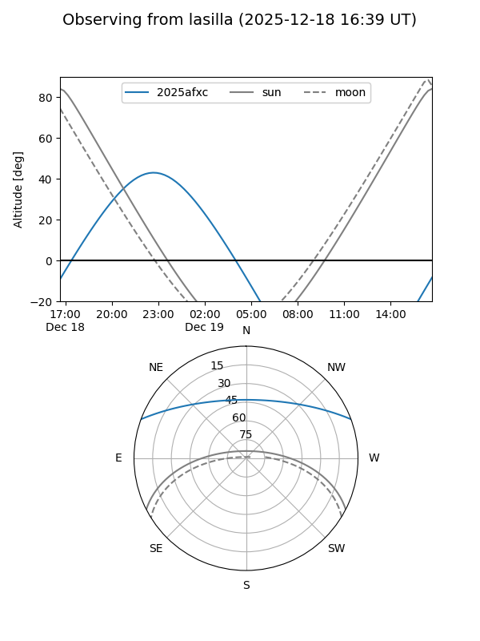
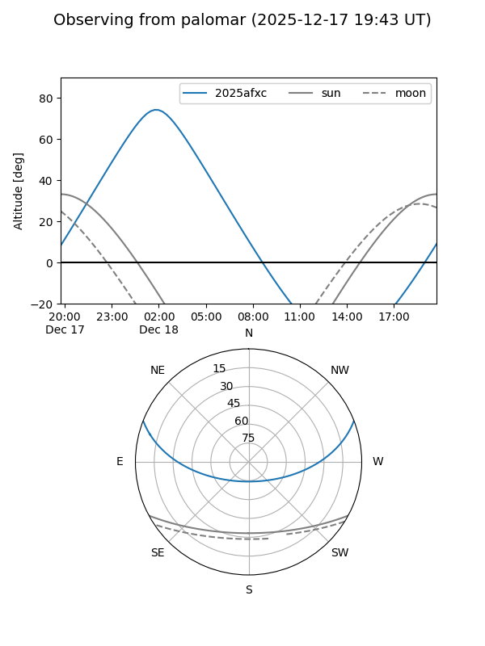
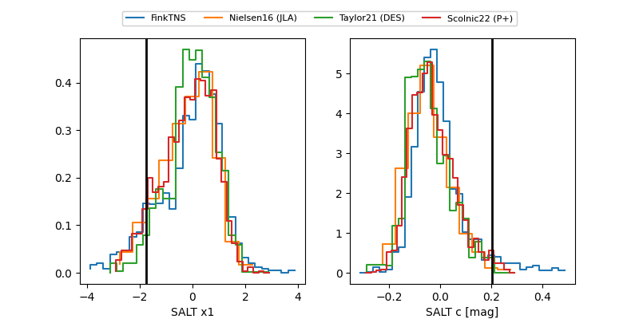

2025afxc
Target 2025afxc at 2025-12-19 03:37
Aliases and brokers:
FINK: fink-portal.org/ZTF25acevqbf
Lasair: lasair-ztf.lsst.ac.uk/objects/ZTF25acevqbf
ALeRCE: alerce.online/object/ZTF25acevqbf
TNS: wis-tns.org/object/2025afxc
YSE: ziggy.ucolick.org/yse/transient_detail/2025afxc
alt names
ZTF25acevqbf (ztf,fink_ztf)
2025afxc (tns,yse)
Coordinates:
equatorial (ra, dec) = 357.2070,+17.54727
equatorial (HMS+DMS) = 23:48:49.67,+17:32:50.17
galactic (l, b) = (102.4026,-42.81482)
Flags:
Photometry:
last ztfg=19.80, ztfr=19.59
2 ztfg, 5 ztfr detections
Lightcurve

Visibility


Additional plots
